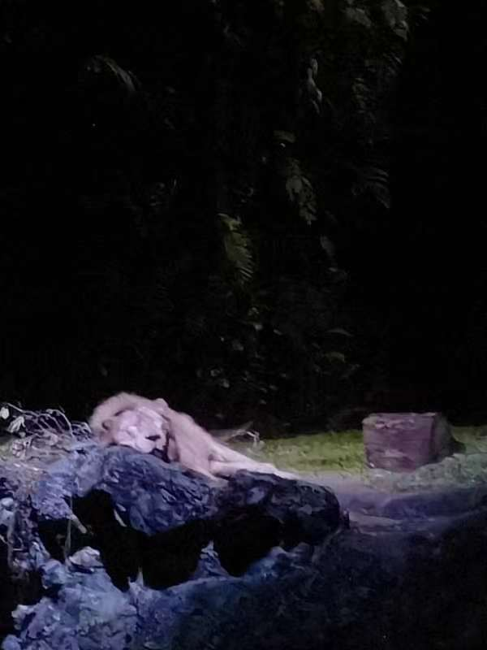
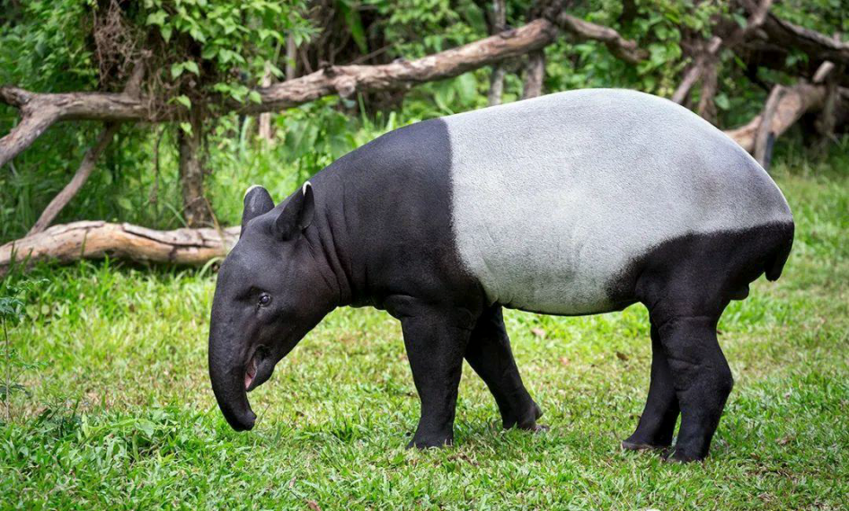
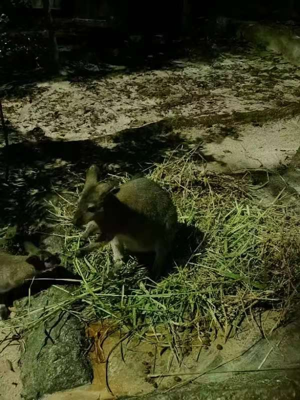

Night Safari Adventure
In front of me is a mass of blackness, with dense and ever-changing tree shadows. It seems there are a few strange bird calls, accompanied by hoarse growls, by my ears, and I’m unsure of where they come. Suddenly, it becomes quiet again, causing my heart to tighten, and my steps seem to hesitate. This is what I felt of entering Night Safari after dusk, and these feelings are novel and unforgettable.
It’s a wonderful summer evening, so the sky hadn’t turned dark yet when I arrived at 7 p.m. I chose to watch the show first, but now I sincerely advise visitors to take the sightseeing train first (especially when it’s still early in the evening)!
I paid the price for my naivety because after watching the show, I headed straight to the station but ended up waiting for over an hour on a hot and humid evening. However, it can be quite interesting to observe faces from all around the world while waiting in line, isn’t it?
The sightseeing train moves slowly and there are audio introductions. It will stop in front of specific exhibition areas, and I leaned forward to get a better look. In the almost pitch-black night, with the specific lighting on the animal friends in those areas, their familiar figures seemed to become unfamiliar.
Although lions are nocturnal animals, the three I saw were all sleeping… 
There are many animals that I have already seen, but there are also some special ones, and one of them is my favorite during the adventure! What animal is black and white in color?
Giant Panda? No! It’s Malayan tapir!!!
I found this picture online because The train left before I had a perfect chance to take a photo. And they are one of the few animals that cannot be seen on footpaths, which is a great pity :(. 
After completing a tour on the train, I embarked on the footpath. It’s a great design because it surrounds the park, so I don’t have to walk the same route again. Despite the crowds at the train station, I can hardly see people walking on footpath. Thus, I felt like it’s a real jungle adventure, and I was part of this place. The street lamps cast a soft light, just illuminating the path, while the areas touched by darkness remain mysterious. Restricted vision brought about improved hearing, amplifying various sounds around the ears. My mind told me that I’m safe in a zoo, but you couldn’t help but be afraid and suspicious of what might come out of the dense woods.
I really love the design of Night Safari. Many areas do not have glass walls, only a railing separates you from the animals. There are also some enclosed houses where you can go in and fully experience the animals’ living environment. I clearly remember that there was a house raising giant bats that you could step into, and in the darkness I can only hear the sound of bats flying overhead and the flapping of their wings. Another house raised some kangaroos, and this is the first time I met with them at night. However, some animals have hidden themselves away and are nowhere to be found in the darkness. 
It’s a great pity that I had to sprint to complete the second half of the journey because I need to catch the last subway train. But overall it was an amazing adventure, and I want to go again!